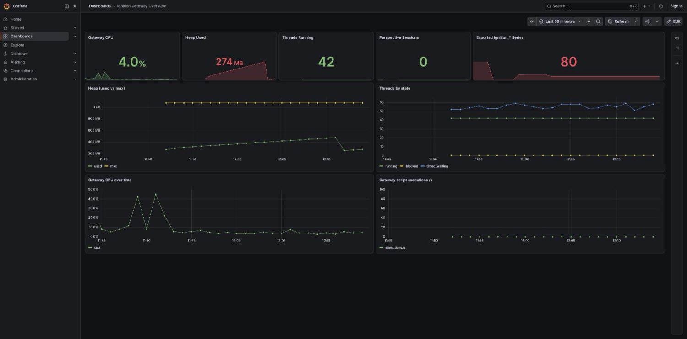

// Notes
Put your Ignition gateway on the same dashboards as everything else.
2026-09-22 · 7 min read · Ignition
Most teams find out a gateway is in trouble when an operator rings. The gateway usually knew first. Heap climbing for a week. A device disconnected since night shift. Store-and-forward queue growing. All of it sitting on a status page nobody had open at 2 a.m.
The people who own uptime are already in Grafana or Datadog, with alert rules and on-call
rotations. The gateway is the one box missing. Closing that by hand means JVM exporters,
wrapper.conf edits and a log shipper that nobody owns by year two.
Mustry Observability does it from inside Ignition 8.3. Metrics and logs leave over OpenTelemetry, or Prometheus scrapes the gateway itself. No sidecar to babysit.

What the registry never had
Polled collector packs read live alarm counts, OPC connection and device states, and MQTT diagnostics for Cirrus Link. None of that sits in the gateway’s metric registry. With the collectors on, a device that dropped an hour ago is a graph line instead of a phone call.
Logs carry logger name, thread, MDC context and structured exceptions. Opt-in audit export puts Ignition audit records on the same pipe. Logger exclusions and a hard rate limit cap what leaves, so the backend bill is a choice rather than a surprise.
Scope
This is gateway health and project KPIs in the place you already watch servers. It does not replace plant-floor historians or MES reporting. Config lives under Platform → Observability and applies without a restart. JVM system properties can override the UI for container fleets.
Ignition Edge is out: Edge only loads modules on Inductive’s vendor list. Target is standard gateways on 8.3+. €800 per gateway, perpetual, Grafana pack in the download.
Manual, Grafana pack and the request form are on the product page.
Observability module on Mustry